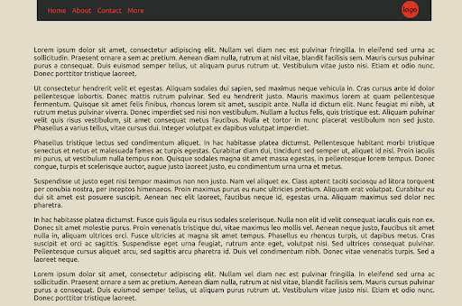
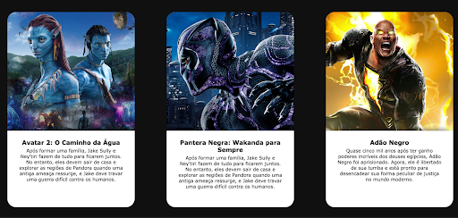

Período: a
Estruture um documento HTML com parágrafos descrevendo cada um dos 6 possíveis seletores e suas chamadas no CSS. Dê exemplos ativos dos seletores em funcionamento, estilizando cada um de forma diferente.
TP 2.1Estruture um documento HTML com 4 parágrafos contendo textos diferentes. Estilize cada parágrafo de forma única, sem repetição, alterando a visualização dos parágrafos no navegador. Use seletores para distinguir os parágrafos e estilize os seletores numa folha de estilos externa ao documento HTML.
TP 2.2Copie o código do exercício anterior e use 4 tipografias diferentes do Google Fonts, uma para cada parágrafo.
TP 2.3Estruture um documento HTML com três parágrafos e um título. Faça o download e incorpore ao seu projeto três famílias tipográficas diferentes. Vincule a cada parágrafo uma família tipográfica distinta, utilizando CSS em uma folha de estilo externa ao seu documento HTML.
TP 2.4Estruture um documento HTML com 3 listas estilizadas. Defina uma lista ordenada, uma lista não ordenada e uma lista de definição. Cada lista deve possuir, no mínimo, 6 itens de lista, cada. O conteúdo das listas deve conter, suas preferências musicais (lista ordenada), suas preferências gastronômicas (lista não ordenada) e canais onde você consome informação na web, detalhando-os (lista de definição).
TP 2.5Estruture um documento HTML com tags para a navegação guiada para itens externos ao seu projeto. Entregue linkagem para a página do Infnet, para a página da globo.com, para a página do linkedin, para a página do youtube e para a página do Instagram. O conteúdo do hiperlink deve ser representado pela combinação de ícone e texto, conforme o exemplo a seguir:
TP 2.6Estruture um documento HTML com tags semânticas do HTML5 para cabeçalho e navegação. O cabeçalho deve conter um logotipo representando a marca. A navegação deve ter 5 elementos: Home, Lojas, Cardápio, Promoções e Contato. Estilize o elemento de navegação e centralize o cabeçalho e a navegação.
TP 2.7Estruture um documento HTML a partir do exercício anterior. Defina abaixo da navegação, um contêiner principal, contendo título e 3 vídeos, sendo um incorporado do Youtube, um incorporado de um arquivo presente na sua estrutura raiz de arquivos do projeto, e o último com link direto da web.
TP 2.8Estruture um documento HTML com a estilização necessária para reproduzir visualmente o conteúdo a seguir:
Reproduza o layout a seguir, com container pai limitado a 992px. O elemento de navegação deve seguir o proposto, com logotipo à direita. Os textos devem estar justificados. Estilize as cores de acordo com a sua escolha.

Estruture um documento HTML para a criação de um ou mais cards conforme o exemplo a seguir. Cada card deve conter imagem, título e descrição, conforme o exemplo.

Estruture um documento HTML para praticar a criação de links que direcionam o usuário para diferentes seções da mesma página HTML. Crie um cabeçalho com um título chamado "Minha Página com Âncoras". Abaixo do título, crie uma lista de navegação com links que direcionam o usuário para três seções diferentes da página. Use os atributos `href` com identificadores para cada link:
Abaixo do menu de navegação, crie três seções diferentes: Sobre Mim, Meus Hobbies e Contato. Pode ser de uma pessoa famosa ou um personagem que o grupo queira.
Faça os passos abaixo:
Criem 3 headers que simulem a capa de rede social de pessoas que consideram marcantes para vocês, ou personagens. Ajustem tamanhos e outras propriedades relacionadas à imagem de fundo.
O tamanho da capa deve ser de 851 x 315 pixels. A imagem da pessoa/personagem deve estar no canto esquerdo, ter a mesma altura e ser arredondada somente nos cantos superior direito e inferior direito.
Adicione uma borda na foto para ter uma separação visual do fundo. Podem adicionar um sombreado também.
Observações: O background é uma imagem e a foto da pessoa/personagem também, sendo que a foto está por cima do fundo.
Replique o exercício anterior e adicione hover no background de cada banner. Ao passar o mouse pelo background escolhido, a imagem do mesmo deve mudar para outra imagem.